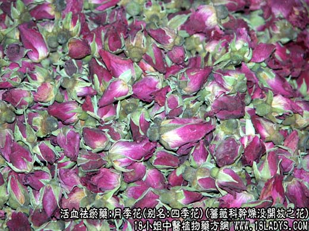
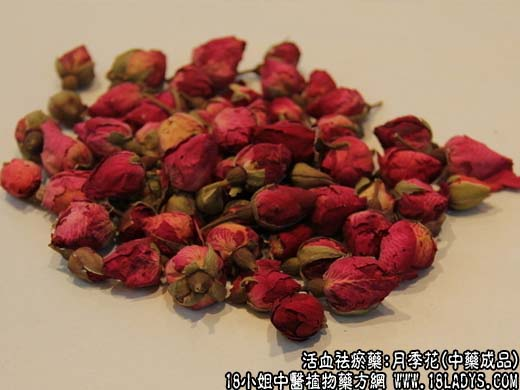

【中药概述】
月季花，别名：四季花、月月红、胜春、斗雪红、月贵花、月记、月月开、长春花、月月花、艳雪红、绸春花、月季红、勒泡、月光花、四香春、月七花，为蔷薇科植物月季干燥未完全开放的花。甘，温。归肝经。
1．活血调经：用于肝郁经阻所致的月经不调，经闭、痛经等，常与丹参，茺蔚子，当归，香附等同用。
2．消肿散结：用于瘰疬等，可与夏枯草，煅牡蛎等同用。
【药物形态】
本品呈类球形，直径1.5～2.5cm。花托长圆形，萼片5，暗绿色，先端尾尖；花瓣呈覆瓦状排列，有的散落，长圆形，紫红色或淡紫红色；雄蕊多数，黄色。体轻，质脆。气清香，味淡、微苦。
【药效鉴别】月季花疏肝郁而通经，用于肝郁气滞，气滞血瘀，月经不调，胁肋胀痛、疝痛等。
【药理作用】活血、消肿作用。
【化学成分】含芳香性挥发油，主要为萜醇类化合物。
【用量用法】
10——20g，水煎服，或入剂。外用适量。